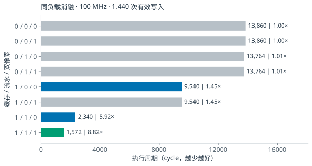
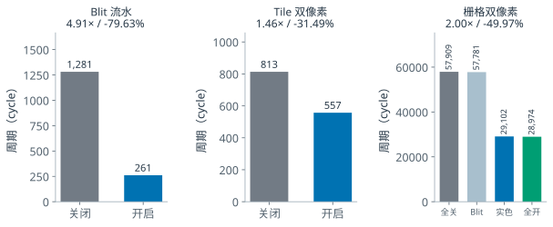
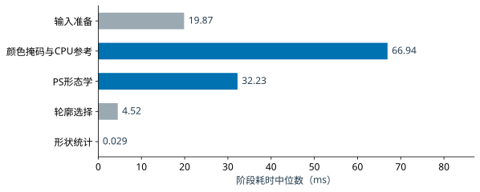
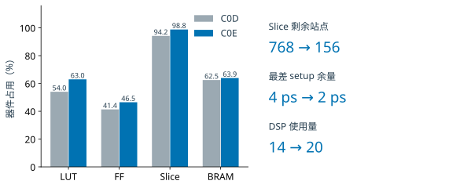
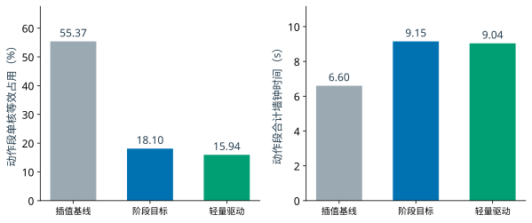
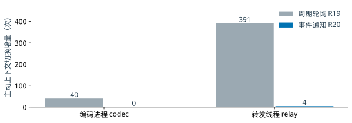
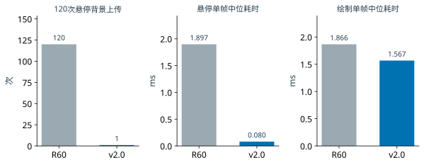

性能与资源优化报告
Scene2D GPU、视觉下沉与灵巧手控制
Voice View | PYNQ-Z2 / xc7z020clg400-1 | 更新日期 2026 年 11 月 4 日
本报告分析三条优化路线：GPU 通过缓存、流水和条件性双像素提高执行吞吐；视觉将颜色分割与形态学前处理下沉 PL；灵巧手通过减少重复写入、精简驱动工作和复用控制会话降低 PS 开销。回传线程的事件通知优化进一步减少空闲唤醒。各模块按其真实实验条件评价，资源和性能数字均绑定具体版本。
 图 1 GPU 优化路线。报告沿用“瓶颈分析—局部实现—结果对照”的方法，进一步评价视觉、手驱动和回传优化。
图 1 GPU 优化路线。报告沿用“瓶颈分析—局部实现—结果对照”的方法，进一步评价视觉、手驱动和回传优化。优化结果总览
| 优化对象 | 主要证据 | 收益与代价 |
| GPU P0–P4 | 同负载 RTL 周期；完整 PL 实现 | Tile 缓存+流水 5.92×，Blit 流水 4.91×；整机 LUT +6.71%，BRAM 62→60。 |
| 视觉 R1→C0E | 旧路径 300 帧剖析；候选物理实现与板端窗口 | 替换重复搬运与 PS 形态学；候选菜单窗口 18.268 fps；Slice 94.23%→98.83%，setup 余量仅 2 ps。 |
| 灵巧手多轮简化 | 四实体按钮动作记录与独立 JSON | 动作段单核等效 55.37%→18.10%→15.94%；非配对历史观察，动作总时长反而增加。 |
| 回传事件通知 | ARM 无硬件组件对照，约 4 秒 | codec 主动切换 40→0，relay 391→4；保留进程与共享槽，不等于释放其内存。 |
最终成果统一以 2026 年 10 月 29 日正式发布的 集成配置为准。集成配置（2026-10-29） 在同解释器 PC 对照中将悬停背景上传120→1次，单帧中位耗时1.897→0.080 ms；同时完成16条游戏对照、60项GPU功能和18项实体协议验收。上表为优化过程中的专项结果，第12节给出正式完整版的最终对比。
GPU P0–P4、视觉下沉和驱动优化为各阶段的配对或历史实验。当前系统配置与验证入口见上级设计报告；各表保留原始输入、时钟、版本和测量范围。
1 前后对比标准与测量边界
前后对比采用两套互补口径：资源与时序比较 P0 和 P4 整机实现；性能比较同一负载下优化开关关闭与开启的 RTL 执行周期。各项加速比绑定对应负载，资源收益按整机实现评价。
表 1 统一对照条件
| 控制项 | 本次采用的固定条件与判据 |
|---|
| 器件与工具 | PYNQ-Z2 / xc7z020clg400-1；Vivado / XSim 2026.1，Windows |
| 版本身份 | P0 BUILD_ID C0060700；P4 BUILD_ID C0060760；P4 是独立实验产物 |
| 时钟与画布 | render 100 MHz，pixel 74.25 MHz；320×180；4 倍最近邻输出 1280×720p60 |
| 功能与容量 | Scene ABI 1.0、GameSDK 1.1；INDEX4 素材；双 framebuffer，每 bank 57,600 字节 |
| 同负载配对 | 保持输入命令、素材、尺寸、透明/翻转/裁剪条件一致；仅改变表中指定开关 |
| 正确性等价 | 有序写入地址和值、count、trace CRC、错误前缀与取消重试；核心另检查真实 XPM 读回 |
| 周期口径 | 归档 TB 中执行区间的 cycle 计数；按具体模块/核心分别解释；不含主机、网络和显示器延迟 |
| 资源与时序 | 最终 post-route 整机报告；LUT/FF/Slice/BRAM/DSP/MMCM；保持原时钟与约束意图 |
| 重复与统计 | 归档为确定性 RTL 用例和单次版本实现；不构造方差、误差线、置信区间或显著性检验 |
表 2 评价指标与计算方法
| 指标 | 公式与解释 |
|---|
| 加速比 S | S = C关闭 / C开启。1.00 倍表示无加速。 |
| 周期减少率 R | R = (C关闭 - C开启) / C关闭 × 100%。 |
| 渲染时间 | 100 MHz 下 t(微秒) = C / 100；仅换算该执行区间。 |
| 资源相对变化 | (N_P4 - N_P0) / N_P0 × 100%；器件占用率另以器件容量为分母。 |
720p60 表示扫描输出模式。局部像素吞吐峰值、GPU 绘制时间、游戏呈现 FPS 和输入到屏幕延迟是不同指标。本节以执行周期评价局部优化，整机呈现另按完整回放评价。
2 Tile 消融与优化机制
固定 size16、3×2 Tile、XY 翻转和透明处理用例，八种开关组合均完成 1,440 次有效写入且 error=0。图 2 同时展示有效改进和收益较小的组合，使优化归因能够由同一负载直接验证。

图 2 相同 size16 / 3×2 Tile 用例的八组合对照，数值为周期及相对全关闭的局部加速比。双像素路径依赖缓存、流水同时开启；开关置 1 不一定激活该路径。来源：S5、S9。
表 3 Tile 八组合完整结果
| 缓存 / 流水 / 双像素 | 周期 | 时间 微秒 | 描述符读取 | 相对全关闭 |
|---|
| 0 / 0 / 0 | 13,860 | 138.60 | 1,536 | 1.00 倍 |
| 0 / 0 / 1 | 13,860 | 138.60 | 1,536 | 1.00 倍 |
| 0 / 1 / 0 | 13,764 | 137.64 | 1,536 | 1.01 倍 |
| 0 / 1 / 1 | 13,764 | 137.64 | 1,536 | 1.01 倍 |
| 1 / 0 / 0 | 9,540 | 95.40 | 96 | 1.45 倍 |
| 1 / 0 / 1 | 9,540 | 95.40 | 96 | 1.45 倍 |
| 1 / 1 / 0 | 2,340 | 23.40 | 96 | 5.92 倍 |
| 1 / 1 / 1 | 1,572 | 15.72 | 96 | 8.82 倍 |
单独启用流水仅减少 0.69% 的周期；缓存将描述符读取从 1,536 次降至 96 次，减少 93.75%。缓存与流水共同开启后降至 2,340 周期，说明重复描述符访问是本用例的重要限制。再启用双像素后为 1,572 周期，相对全关闭加速 8.82 倍。
双像素路径要求 cache、pipeline 同时开启，并满足描述符有效、行内边界和地址对齐条件。因此 001、011、101 与对应 pair=0 组合周期相同，属于前置条件未满足时的兼容路径；八组合结果不能按三个独立主效应相加解释。8.82 倍仅适用于本 Tile 单元负载。
3 不同绘图路径的配对性能结果
图 3 分别检验 Blit 流水、核心 Tile 双像素和核心栅格双像素。每项保持输入和前置优化一致，只切换被检验的路径。不同子图采用独立周期刻度，表 4 汇总完整数值。

图 3 三条绘图路径的周期对照。右图另拆分仅 Blit 双写、仅实色双写与全部开启；实色指 CLEAR/FILL。上方加速比对应全关至全开。来源：S6。
表 4 各绘图路径的周期对照
| 同负载测试 | 关闭 → 开启 周期 | 减少 | 加速比 |
|---|
| P1 Tile 缓存 | 13,860 → 9,540 | 31.17% | 1.45 倍 |
| P2a Blit 流水 | 1,281 → 261 | 79.63% | 4.91 倍 |
| P2b Tile 流水 | 9,540 → 2,340 | 75.47% | 4.08 倍 |
| P1+P2b 累计 | 13,860 → 2,340 | 83.12% | 5.92 倍 |
| P3a Tile 双像素 | 813 → 557 | 31.49% | 1.46 倍 |
| P3b 栅格双像素 | 57,909 → 28,974 | 49.97% | 2.00 倍 |
P2b 与累计 P1+P2b 复用图 2 的 Tile 负载；其余项使用各自专用负载。周期来源和开关背景见 performance.csv。
表 5 代表性用例与输出等价检查
| 用例 | 负载和正确性证据 |
|---|
| Blit 流水 | 256 次不透明有效写入；1281→261 周期，即 12.81→2.61 微秒；合法连续段达到 1 像素/拍。 |
| 核心 Tile 双像素 | cache/pipeline 等前置优化固定；有效写入 513，CRC 88CEA2AB 保持；813→557 周期。 |
| 核心栅格双像素 | Tile/cache/pipeline 固定开启；普通不透明帧有效写入 57,873，CRC 0CD1AB1A 保持；579.09→289.74 微秒。 |
同一栅格负载中，仅 Blit 双写为 57,781 周期，仅实色双写为 29,102 周期，两者同时开启为 28,974 周期；四组写入数和 CRC 均相同。该用例的主要收益来自 CLEAR/FILL 双写，四组合对照明确了各路径贡献。双像素路径仍受对齐、源 byte、行界和透明 lane 条件限制。
4 资源成本与容量占用
P0/P4 的直接资源对照取自整套 PL 设计的实现后报告，包含 GPU、DMA、HDMI、控制与回传配套。图 4 左侧以器件容量统一为百分比，右侧展示相对 P0 的累计资源变化。
 图 4 P0/P4 容量占用及累计资源轨迹。容量分母为 LUT 53,200、FF 106,400、Slice 13,300、BRAM 140；各类占用率分别解释。来源：S4。
图 4 P0/P4 容量占用及累计资源轨迹。容量分母为 LUT 53,200、FF 106,400、Slice 13,300、BRAM 140；各类占用率分别解释。来源：S4。
表 6 累计版本的整机资源
| 累计版本 | LUT | FF | Slice | BRAM Tile | BUILD_ID |
|---|
| P0 | 14,025 | 22,845 | 7,262 | 62 | C0060700 |
| P1 | 13,982 | 22,870 | 7,250 | 62 | C0060710 |
| P2a | 14,005 | 22,908 | 7,229 | 62 | C0060720 |
| P2b | 14,110 | 22,968 | 7,236 | 62 | C0060730 |
| P3a | 14,550 | 23,005 | 7,386 | 60 | C0060740 |
| P3b | 14,610 | 23,044 | 7,421 | 60 | C0060750 |
| P4 | 14,966 | 23,374 | 7,538 | 60 | C0060760 |
+6.71%LUT +941；FF +529（+2.32%）
-2 TileBRAM 62→60；容量合同保持
2 / 2DSP / MMCM；各阶段保持不变
P4 相对该实验预算 15,110 LUT / 23,844 FF 还剩 144 LUT / 470 FF。该数值是实验预算余量，与器件剩余容量不同。P1 整机 LUT 从 14,025 降至 13,982，包含工具映射与布局变化，不能据此断言缓存本身节省逻辑；同配置局部 OOC 记录的缓存增量为 +27 LUT / +25 FF。BRAM 的下降来自 framebuffer 组织调整，容量合同保持。
5 时序问题定位与修复
各累计版本最终均满足同目标时钟下的 setup/hold 门槛。图 5 给出整机结果；表 7 用局部失败和复验说明修改如何收敛。OOC 指模块独立实现，其余量与整机结果分别解释。
 图 5 各累计版本的最终整机 WNS/WHS，渲染与像素时钟保持 100/74.25 MHz。P4 为 0.029/0.052 ns，setup 余量较 P0 减少 0.028 ns。来源：S4。
图 5 各累计版本的最终整机 WNS/WHS，渲染与像素时钟保持 100/74.25 MHz。P4 为 0.029/0.052 ns，setup 余量较 P0 减少 0.028 ns。来源：S4。
表 7 失败反馈与修复复验
| 问题与原始反馈 | AI 辅助定位与修改 | 复验结果与层级 |
|---|
| Tile 流水定位与尾界组合链过长；首轮 OOC 开启版 WNS -0.981 ns | 提前锁存 descriptor 源原点和水平终点，缩短逐像素定位链 | 同负载黄金保持；最终 Tile 流水 OOC 0.281/0.121 ns |
| Blit 双像素局部 OOC WNS -1.539 ns；首次修复又在 negative_xy 触发 watchdog | 拆分 source/pair/step/rowend 链；使用 Blit 自身候选坐标判断尾部 | 原独立 oracle 复验；最终 Blit pair OOC 1.701/0.159 ns |
| P4 开启版核心 OOC 默认布线 WNS -0.006 ns | 保留失败 DCP；同钟同 RTL 同约束执行后布线 AggressiveExplore | 开启版 OOC 0.070/0.100 ns；整机另为 0.029/0.052 ns |
| P4 busy 撤销至 hold 锁存间隙可能启动 READY | 在 renderer_start 条件中增加 !renderer_done，关闭完成边界窗口 | off/on 写入与 CRC 保持；520 次重叠握手及边界测试通过 |
来源：S2、S3。AI辅助完成定位与改写，黄金回归和工具报告验证修改效果。案例中前后 OOC 数值仅在对应模块与轮次内比较。
P4 整机 TNS/THS、setup/hold 失败端点和内部未约束端点均为 0；时序报告仍保留 4 个输出无 delay 的既有缺项，质量报告也存在原有 warning/info。已约束路径的建立与保持检查通过；接口约束与告警见原始报告。
6 上传渲染重叠及输出一致性
P4 使用双命令 bank，在当前 Scene 渲染期间预上传同资源代次的下一 Scene，最多保留一个 READY。renderer 读 bank 被锁定，完成结果保持到呈现及软件 release；资源更新先 drain，再等待 generation 实际提交。
 图 6 同一两 Scene 测试中的重叠行为与输出等价。520 为 renderer_busy 期间下一 Scene 的核心内部上传握手数。来源：S7。
图 6 同一两 Scene 测试中的重叠行为与输出等价。520 为 renderer_busy 期间下一 Scene 的核心内部上传握手数。来源：S7。
表 8 P4 输出与协议边界检查
| 检查项 | 关闭重叠 | 开启重叠 |
|---|
| busy 期间下一 Scene 内部握手 | 0 | 520 |
| 两 Scene 有效像素写入 | 57,602 | 57,602 |
| CLEAR trace CRC | A0708AC3 | A0708AC3 |
| FILL trace CRC | 3094986A | 3094986A |
| 队列满、提前 release、资源栅栏 | 基础对照 | full_queue=1 / early_release=1 / resource_fence=1 |
| generation 拒绝、半包复位、末字节 | 基础对照 | generation_rejects=3 / partial_reset=1 / last_byte=11 |
握手计数证明下一 Scene 已在当前渲染期间推进。调度收益来自利用这段原本等待的时间；其大小仍由上传耗时、渲染、vblank 与软件退休共同决定。本计数既不等于外部 DMA 总 beat 数，也不足以计算端到端节省时间。
该实验 18 份最终仿真日志覆盖 off/on、完整画布扫描、命令 bank、绘图/掩码/错误前缀及资源更新。软件的 128 个测试与 4 个子测试、后续关闭安全增量 87 个测试来自归档事实记录，两轮范围有重叠，按各自测试集分别统计。
7 视觉下沉的瓶颈与职责重分配
旧 R1 路径从相机采集 RGB，经 PS 复制、缩放和方向处理，再上传 SKN6 获取 mask；PS 同帧参考及形态学仍有明显开销。PL 下沉把颜色阈值、双 mask 和形态学组织为流式前处理，PS 保留轮廓、形状统计、分类投票及输入发布。优化目标是减少重复搬运和前处理开销，同时保持 BGR、方向、阈值和输出语义一致。

图 7 R1 的阶段耗时中位数。300 个不同 NO_HAND 帧，60.101 秒 HTTP 采样；源跨度 377 帧且漏采 78 帧，非全帧无损记录。来源：V1。表 9 旧路径分段耗时
| 阶段 | P50 ms | P95 ms | P99 ms |
| 输入准备 | 19.870 | 25.700 | 27.040 |
| 颜色掩码与CPU参考 | 66.940 | 74.390 | 79.480 |
| PS形态学 | 32.230 | 36.430 | 38.700 |
| 轮廓选择 | 4.520 | 8.700 | 9.560 |
| 形状统计 | 0.029 | 0.033 | 0.036 |
按逐帧配对样本累加“输入准备+颜色 mask+形态学”，P50/P95/P99 为 119.09/128.70/135.85 ms。这个分布直接来自配对样本，不能用表内分位数相加替代。color_mask 包含 SKN6 事务与 CPU 参考，SKN6 子阶段 P50 为 25.19 ms；不能把整段颜色耗时都归给硬件传输。
这组剖析明确了下沉的优先级：颜色 mask 与形态学占据主要前处理时间，适合流式并行；轮廓和分类保留在 PS，继续利用软件的灵活性。新路径把计算前移到采集侧，为 PS 释放前处理预算，后续以新帧率和完整链路继续检验收益。
8 视觉加速结果与 FPGA 资源约束

图 8 C0D R1 与 C0E reviewed-r02 的整机资源观察。LUT、FF、Slice、BRAM 各以器件容量为分母；两版功能组成不同，不能视为纯核净增量。来源：V1、V2。表 10 视觉融合版本实现结果
| 版本 | LUT / FF | Slice / BRAM | WNS / WHS ns |
| C0D R1 | 28,746 / 44,000 | 12,532 / 87.5 | 0.004 / 0.050 |
| C0E reviewed-r02 | 33,499 / 49,451 | 13,144 / 89.5 | 0.002 / 0.049 |
C0E 以增加 4,753 LUT、5,451 FF、612 Slice、2 BRAM Tile 和6 DSP实现视觉前处理下沉，并保持 100 MHz 目标。多轮时序修复后，最终 WNS/WHS 达到 0.002/0.049 ns，完成固定 DCP 的实现与配对导出。FPGA Slice 占用达到 98.83%，说明该实验选择了以较紧布局预算换取前处理并行能力。
表 11 板端视觉窗口观察
| 窗口 | 识别率 | 说明 |
| R1 G21 | 5.5637 fps | 旧版短窗口；不是候选同场景 ABBA 对照。 |
| C0E R20 B09 | 18.268 fps | 10.18 秒默认菜单，无 JPEG 订阅窗口。 |
| R20 B10 | 4.777 fps | 回传观察期；结果年龄中位 262.7 ms、P95 364.5 ms。 |
| R20 B16 | 21.183 fps | 后续菜单窗口回升；中途订阅变化未全程记录。 |
PL 下沉后，菜单窗口达到 18.268 fps，后续窗口达到 21.183 fps；与旧版 5.5637 fps 的记录相比，新路径展示了更高的新观测产出能力。回传期的 4.777 fps 波动进一步推动预览解耦与按需工作优化。R20 同时通过八条 GPU 黄金、共 3,859 tick 的共存回归，说明加速路径已接入实际应用。表内为不同运行窗口观察，比较时保留各自负载条件。来源：V2、V3。
9 灵巧手驱动简化与 CPU 观察
17 电机灵巧手的原路径包含高频插值位置写入、反馈扫描、逐包附加审计与重复换算。第一轮改为原生阶段目标、末端降频和及时卸力；后续精简默认审计、缓存不变信息，并采用有界编解码路径。在同一套电机硬件上，这些软件修改减少了重复工作，同时保留 SDK 逐颗 ACK、错误校验与当轮保护合同。

图 9 三轮实体四按钮测试的动作段结果：CPU 占用持续下降，墙钟时间体现阶段等待取舍。各轮起点与配置详见 H1—H3，按历史轮次展示。表 12 动作段总量及交互变化
| 版本 | 墙钟 s | CPU s | 单核等效 | 位置写入 |
| 插值基线 | 6.600 | 3.655 | 55.37% | 1,513 |
| 阶段目标 | 9.149 | 1.656 | 18.10% | 149 |
| 轻量驱动 | 9.038 | 1.441 | 15.94% | lean 附加计数关闭 |
减写是第一轮优化最直接的效果：位置写入尝试由 1,513 次降至149次，记录数量减少90.15%；动作段 CPU 时间由3.655 s降至1.656 s。进一步精简审计和编解码后，CPU时间降至1.441 s，单核等效占用15.94%。这些结果表明，将重复插值和附加处理移出动作热路径，能有效降低手侧软件负担。三轮为非配对历史测试，动作起点与等待策略见原件。
资源节省伴随明确的时间取舍：阶段目标版动作总时长9.149 s，轻量驱动版9.038 s，均长于原插值轮的6.600 s。h164 四态分别约1.287/2.392/2.059/3.299 s；动作内100 ms采样峰值最高39.59%，全程含启动峰值108.76%。平均占用与窗口峰值分别列示，便于继续优化启动热点。
10 预计算动作与持续会话复用
表 13 从逐动作流程到固定播放
| 环节 | 原流程 | 简化后及边界 |
| 启动 | 模型导入、冻结校验、connect/arm、自检与对齐 | 启动仍执行必要身份与设备检查；在同一有效会话内只 arm 一次。 |
| 轨迹 | 动作期插值、换算及反馈驱动 | 构造时预计算阶段 raw 目标，动作期写目标并执行可取消等待。 |
| 反馈 | 依模式取得实测位置与三帧到位判断 | 固定播放正常动作 0 READ，逐颗 ACK 保留；played 仅表示播放完成。 |
| 调度 | 每键完成后卸力，再接下一动作 | 持续来源下复用 Controller/enable epoch；动作后只处理最新帧，忙时不积压旧命令。 |
| 退出 | 释放并核回执 | 保留 17 OFF 与回读；来源失活/撤销/身份改变触发取消、关闭。 |
固定播放的 PC 验收条件 h170 为 137 测试、117 个冻结文件一致；32 个唯一组合各连续两次，验证 64 次正常播放零 READ。测试中 0.1/0.2/0.3 秒是假时钟刺激，不能作为真实机械等待时间。持续 owner 后续 182 项离线测试通过，35.297 秒驻留测试跨过原 30 秒边界，但使用内存串口与线程替代，不是实体长稳态。来源：H4、H5。
预计算使动作热路径聚焦于“写目标—等待—响应取消”，持续会话则复用初始化与使能结果，避免每个手势重复进入完整启动流程。两者分别减少动作内计算和跨动作固定成本。固定播放采用定时完成语义，输出played；机械到位和持续温升单独验收。
表 14 后续实体接入证据
| 记录 | 已验证 | 验收范围与进展 |
| 10 月 25 日 r04 | 现场反馈剪刀与回默认正确；owner 117.718 s；退出 17 OFF 确认 | 完成现场交互与退出验证；末项在正常关闭时取消。 |
| r04 的 10.011 s 窗口 | 手侧约 1.498% 单核，RSS 约 23.0 MiB | 混合运行窗口观察；动作占比未单独标记。 |
| 10 月 28 日 R60 | 正常入口 HAND ACTIVE、无总时限，预览关闭 | 持续会话接入完成，交给真人操作；等待现场反馈。 |
来源：H6、H7。现场剪刀及回默认验证把离线预计算路径推进到真实交互；完整17颗OFF回执验证退出清理。持续运行版本已接入正常入口，后续重点为阶段等待、持力温升和异常恢复。
11 回传按需工作与空闲唤醒优化
视觉下沉后，预览编码和轮询仍会争用 ARM、内存与 DDR。R30 将 codec 的 100 ms 周期等待改为 Event 通知，relay 从 10 ms 管道轮询改为结果/任务/退出事件等待；保持原双 slot 和 latest-only 策略，不增加线程或无界任务队列。relay 仅保留 1 秒本地故障检查。

图 10 板端 ARM 无硬件组件对照，约 4.008 秒空闲窗口。主动切换作为唤醒开销的观察指标；两轮均收到 frame1/2/3 并 CLEAN 退出。来源：P1、P2。表 15 空闲窗口记录
| 版本 | 窗口 s | codec / relay 主动切换 | codec / relay CPU ticks |
| 周期轮询 R19 | 4.0078 | 40 / 391 | 0 / 9 |
| 事件通知 R20 | 4.0074 | 0 / 4 | 0 / 0 |
事件通知直接消除了 codec 的40次周期性主动切换，并将relay切换由391次降至4次，约减少98.98%。对应CPU ticks由0/9变为0/0。保留已初始化进程待命，使空闲时减少工作、需要回传时快速恢复；共享槽容量和进程数量保持稳定。CPU tick按原采样粒度记录。
真实菜单、三游戏和视频中共 10 条 MJPEG 流、30 张 640×360 JPEG 解码及重连通过。独立停播观察还记录约 68.994 秒编码/JPEG 序号不再增长，而视觉源前进 1,619 帧，说明预览可停止工作而不停止识别。后者验证控制行为，不提供 CPU 节省百分比。来源：P3、P4。
12 集成画板优化对比
画板配对实验采用2026-10-29 集成配置，软件清单为5f53d85d…41e9d56，BUILD_ID为0xC0061000。画板性能采用同解释器、同通用图像校验、每组120帧的R60/v2.0配对PC基准；实际板端功能另由发行验收原件确认。

图11 R60与v2.0最终画板优化对照。悬停背景上传减少99.17%，单帧中位耗时减少95.77%（23.66×）；绘制中位耗时减少16.00%。测量范围：PC CPU，无GPU/网络计时。来源：F1。最终对比 优化前路径与 集成配置
| 对象 | 优化前 / 中间路径 | 集成配置结果 |
| 画板资源 | 悬停每帧重建/上传背景；120帧120次 | 复用背景，四条GPU边框命令；120帧仅1次背景上传。 |
| 画板输入 | 独立分类可否决UI握拳；限频前提前消费帧 | 使用同源新鲜ControlState；接受后消费帧；实体40次有效修订、固定46,080字节。 |
| 灵巧手 | 每次动作重复使能/反馈；菜单进入存在空档 | 固定播放持续owner；首次开机及HOME/GAMES/VIDEOS跟随；回传/画板/视频有界交接。 |
| 视觉与PL | C0E为下沉研发与时序实验对象 | 最终沿用C0061000配对Overlay，WNS/WHS=0.011/0.050 ns。 |
| GPU实验 | P0–P4展示缓存、流水与双像素的专项周期收益 | 发行HWH中这些实验开关为0；最终GPU收益以画板复用与60项功能验收体现。 |
2026-10-29 集成验收：四游戏16条PC/PYNQ逐tick对照、真实GPU60项、实体串口18项、两次实际exec与17OFF/CLOSED、Studio重连和正常入口均通过。优化既有量化效率结果，也已完成完整版集成验证。来源：F2、F3。
13 优化有效性与资源取舍总结
表 16 优化效果与下一阶段评价
| 目标 | 已形成的证据 | 进一步量测 |
| 提高绘图吞吐 | GPU 同负载周期、CRC、完整扫描和实现报告 | P0/P4 同 Scene submit→present 分布及实际 FPS。 |
| 减少视觉前处理 | 旧路径剖析、PL 资源/时序与真实新帧推进 | 固定场景/订阅/诊断负载，采集配对阶段与端到端时延。 |
| 降低手侧软件开销 | 写包、动作段 CPU/墙钟、固定播放零 READ 合同 | 相同起点、阶段等待、动作序列配对；记录机械到位与温升。 |
| 减少后台空转 | ARM 空闲组件切换计数、真实回传重连 | 长窗口 CPU/PSS、按需模式切换成本和识别源龄。 |
| 维持资源余量 | 各版本完整 PL 报告与具体 FPGA 站点余量 | 融合版本独立签核；避免将模块 OOC 增量简单相加。 |
测量方法：固定配对包 SHA、BUILD_ID、驱动和输入；每组预热后执行多轮配对，交替顺序。CPU 报进程家族累计时间、墙钟和单核等效；时延报 P50/P95/P99、样本数和缺失；资源报整机 post-route，功耗另做同供电点测量。各阶段分位数分别统计，逻辑吞吐和物理端到端时延分别报告。
AI 辅助分析以接口约束和原始计时为输入，生成可隔离的候选实现。采用黄金参考、仿真与实现报告检验结果，并在验证中覆盖背压、跨时钟、通信确认、退出与恢复。
新增来源索引
F1 canvas-benchmark.json；F2 v2.0发行/画板菜单记录；F3 acceptance-summary.json及发行回执；F4发行overlay的HWH、manifest和timing。V1视觉延迟方案；V2时序修复；V3 R20板测。H1—H3为h143/h150/h164 JSON，H4固定播放，H5持续owner，H6 r04现场，H7 R60。P1/P2为r30 ARM空闲JSON，P3 R30记录，P4停播记录。GPU S1—S9沿用前章。原件与SHA见data/source_manifest.json。
GPU 配对实验验证执行吞吐，视觉实验记录前处理与新帧产出，灵巧手实验记录动作段 CPU 开销，回传实验记录空闲唤醒。原始配置、数据与日志随各表提供。